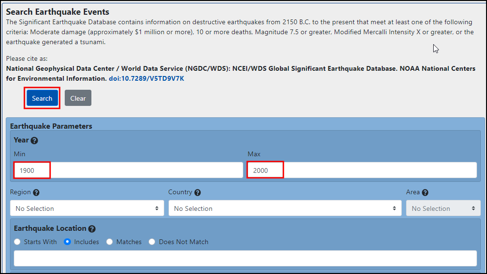
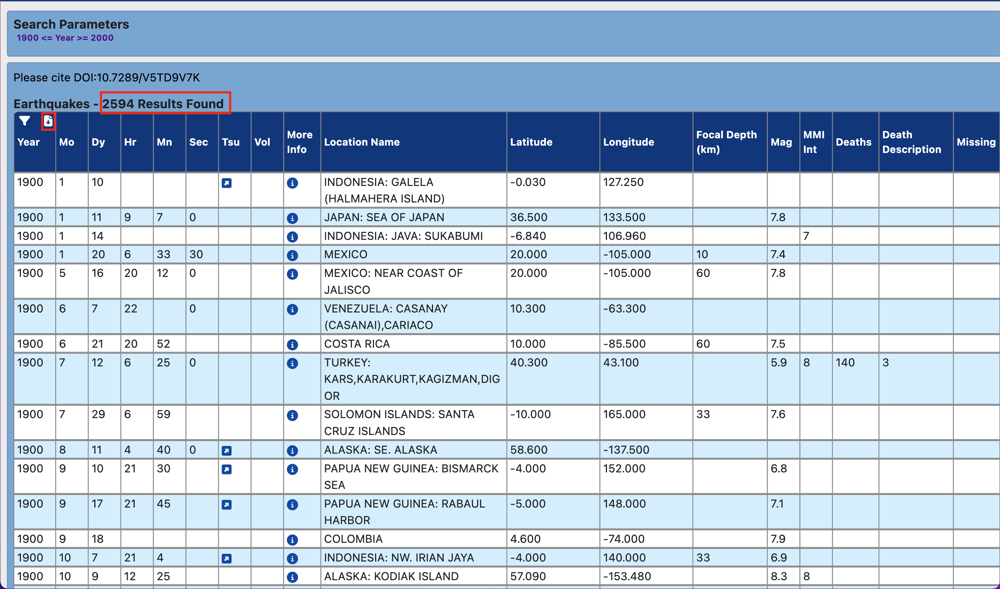
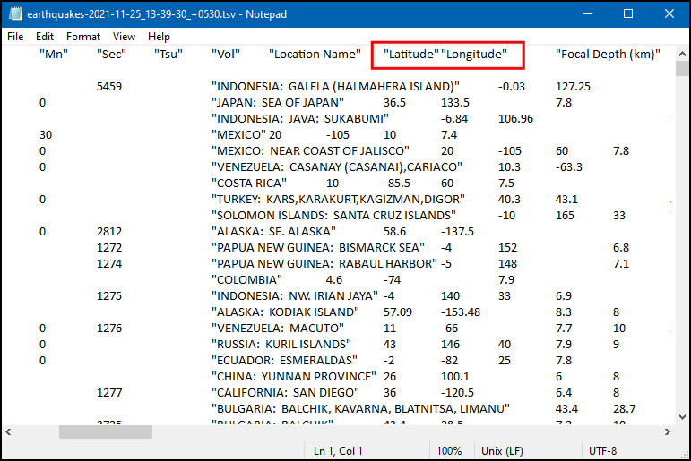
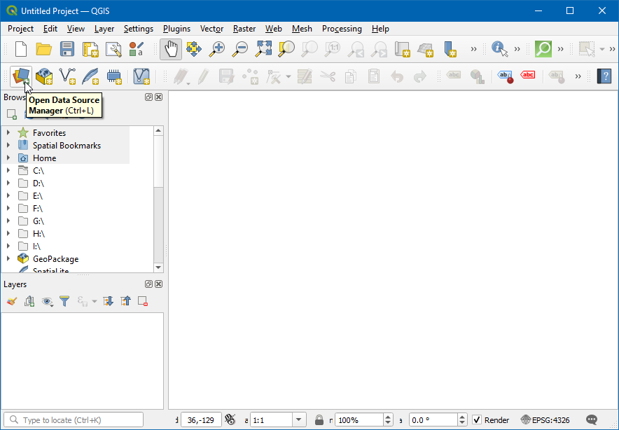
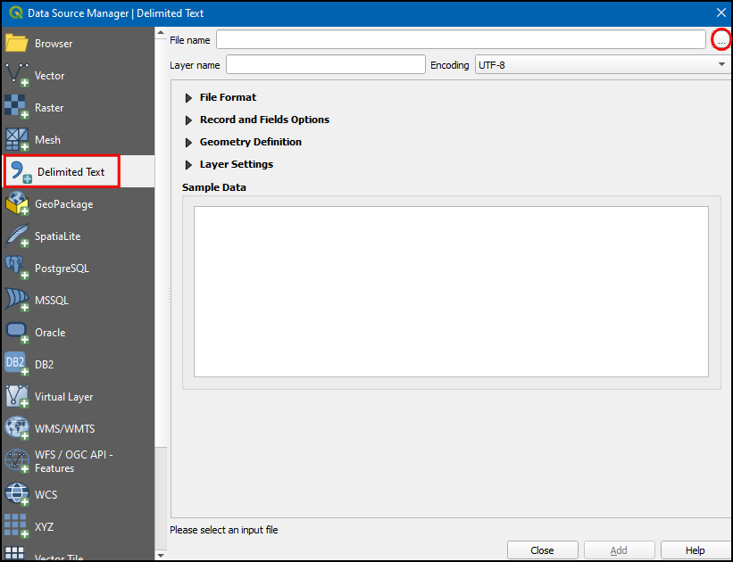
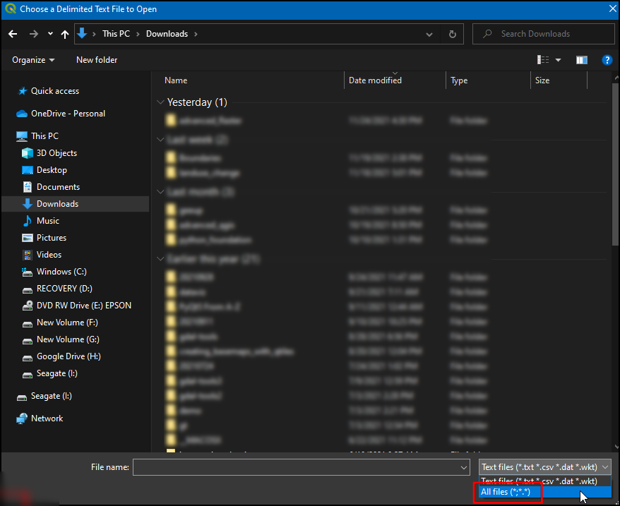
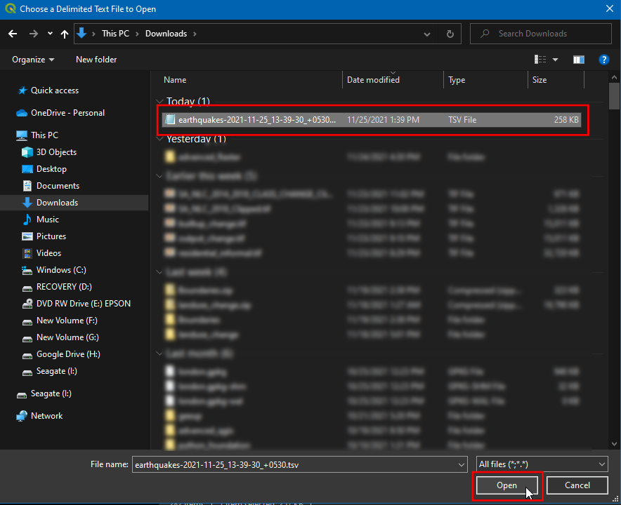
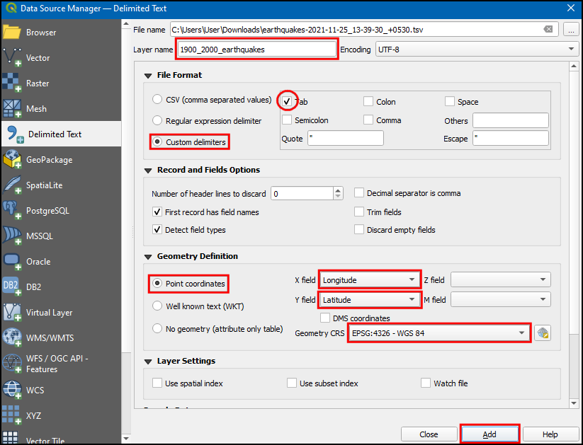
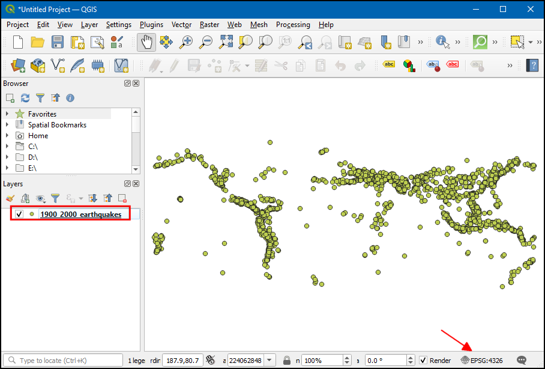

Ujaval Gandhi
Ujaval Gandhiცხრილების ან CSV ფაილების იმპორტი (QGIS3)¶
ხშირად GIS მონაცემები ცხრილის ან ელექტრონული ცხრილის (spreadsheet) სახითაა მოცემული. QGIS საშუალებას გაძლევთ მოახდინოთ კოორდინატების მქონე სტრუქტურირებული ტექსტური ფაილების იმპორტი ვექტორულ ფენად. ეს სახელმძღვანელო გვიჩვენებს, თუ როგორ შეგიძლიათ გამოიყენოთ Data Source Manager (მონაცემთა წყაროების მმართველი) Delimited Text (გამყოფებით გამოყოფილი ტექსტი) ფაილების იმპორტისთვის.
ამოცანის მიმოხილვა¶
ჩვენ მოვახდენთ მიწისძვრების ადგილმდებარეობების შემცველი ტექსტური ფაილის იმპორტს QGIS-ში, რომელიც წარმოდგენილია ტაბულაციით გამოყოფილი მნიშვნელობების (TSV) ფორმატში და შევქმნით წერტილოვან ფენას.
მონაცემების მიღება¶
ამ სახელმძღვანელოსთვის ჩვენ გადმოვწერთ 1900-2000 წლებში მომხდარი მიწისძვრების მონაცემთა ნაკრებს. NOAA-ს გეოფიზიკური მონაცემების ეროვნული ცენტრი აწარმოებს საუკეთესო მონაცემთა ბაზას ყველა მნიშვნელოვანი მიწისძვრის შესახებ ძვ. წ. 2150 წლიდან დღემდე. ეწვიეთ NOAA NCEI პორტალს და ველში Min შეიყვანეთ
1900, ხოლო ველში Max —2000. ეს დააბრუნებს ინფორმაციას ყველა იმ მიწისძვრის შესახებ, რომელიც მოხდა და აღირიცხა NOAA-ს მიერ ამ წლებში. სხვა კონკრეტული შედეგებისთვის შეგიძლიათ გამოიყენოთ ფილტრის სხვადასხვა პარამეტრები. დააჭირეთ Search (ძიება).

ძიების შედეგად ჩვენ მივიღეთ 2594 მიწისძვრის შემთხვევა. დააჭირეთ Download TSV (TSV-ის გადმოწერა) ხატულას.

მოხერხებულობისთვის, შეგიძლიათ პირდაპირ გადმოწეროთ მონაცემთა ნაკრების ასლი ქვემოთ მოცემული ბმულიდან:
earthquakes-2023-09-12_17-19-15_+0530.tsv
მონაცემთა პირველწყარო [NCEI]
მოქმედებათა თანმიმდევრობა¶
შეამოწმეთ თქვენი ცხრილური მონაცემების წყარო. გადმოწერილი მიწისძვრების მონაცემთა ბაზა შეიცავს
Latitude(განედი) დაLongitude(გრძედი) ველებს, რომლებიც მიუთითებს მიწისძვრის ეპიცენტრის მდებარეობასა და სხვა დაკავშირებულ ატრიბუტებს. ჩვენ გამოვიყენებთ ამ ველებს ფაილის წერტილოვან ფენად იმპორტისთვის. გახსენით მონაცემები ტექსტურ რედაქტორში (მაგალითად, Notepad ან TextMate), რათა დაათვალიეროთ მისი შიგთავსი. თქვენ დაინახავთ, რომ თითოეული ველი ერთმანეთისგან ტაბულაციით (TAB) არის გამოყოფილი.

ნოტი
თუ გაქვთ ელექტრონული ცხრილი, გამოიყენეთ თქვენი პროგრამის Save As (შენახვა როგორც) ფუნქცია, რათა შეინახოთ იგი ტაბულაციით გამოყოფილი ტექსტის (Tab Delimited File) ან მძიმით გამოყოფილი მნიშვნელობების (CSV) ფაილად.
QGIS-ს მოჰყვება მონაცემთა ერთიანი მმართველი, რომელიც საშუალებას გაძლევთ ჩატვირთოთ მხარდაჭერილი მონაცემების ყველა სხვადასხვა ფორმატი. დააჭირეთ Open Data Source Manager (მონაცემთა წყაროების მმართველის გახსნა) ღილაკს Data Source Toolbar (მონაცემთა წყაროების ხელსაწყოთა ზოლზე). თქვენ ასევე შეგიძლიათ გამოიყენოთ კლავიატურის კომბინაცია Ctrl + L.

Data Source Manager (მონაცემთა წყაროების მმართველი) დიალოგურ ფანჯარაში გადართეთ Delimited Text (გამყოფებით გამოყოფილი ტექსტი) ჩანართზე. დააჭირეთ ... ღილაკს File name (ფაილის სახელი) ველის გვერდით.

თქვენი ოპერაციული სისტემის მიხედვით, შესაძლოა გადმოწერილ მისამართზე ფაილი არ გამოჩნდეს. ფაილის ფორმატებში (File formats) გადართეთ პარამეტრზე
All files (*; *.*)(ყველა ფაილი), რათა დაინახოთ tsv ფაილი.

ახლა თქვენ დაინახავთ გადმოწერილ ფაილს. მონიშნეთ იგი და დააჭირეთ Open (გახსნა).

Data Source Manager დიალოგურ ფანჯარაში, ფაილის მისამართი ხელმისაწვდომი იქნება File Name (ფაილის სახელი) ველში. შეცვალეთ :guilabel:Layer name (ფენის სახელი) შემდეგნაირად:
1900_2000_earthquakes. File format (ფაილის ფორმატი) სექციაში აირჩიეთ Custom delimiters (მომხმარებლის მიერ განსაზღვრული გამყოფები) და მონიშნეთTab. Geometry definition (გეომეტრიის განსაზღვრა) სექციაში აირჩიეთ Point coordinates (წერტილოვანი კოორდინატები). თუ პროგრამა შემავალ მონაცემებში იპოვის შესაბამისი სახელის მქონე ველებს, X field და Y field მნიშვნელობები ავტომატურად შეივსება. ჩვენს შემთხვევაში, ესენიაLongitude(გრძედი) დაLatitude(განედი). თუ იმპორტისას არასწორი ველები შეირჩა, შეგიძლიათ მათი შეცვლა. Geometry CRS (გეომეტრიის კოორდინატთა სისტემა) შეგიძლიათ დატოვოთ სტანდარტულ მნიშვნელობაზე —EPSG:4326 - WGS 84. თუ თქვენი ფაილი სხვა კოორდინატთა სისტემის მონაცემებს შეიცავს, შესაბამისი CRS აქ უნდა აირჩიოთ. დააჭირეთ Add (დამატება).
ნოტი
ძალიან ადვილია ერთმანეთში აგერიოთ X და Y კოორდინატები. განედი (Latitude) განსაზღვრავს წერტილის მდებარეობას ჩრდილოეთსა და სამხრეთს შორის, შესაბამისად ის არის Y კოორდინატი. ანალოგიურად, გრძედი (Longitude) განსაზღვრავს წერტილის მდებარეობას აღმოსავლეთსა და დასავლეთს შორის და ის არის X კოორდინატი.
ახლა თქვენ დაინახავთ, რომ მონაცემები იმპორტირებულია და ნაჩვენებია QGIS-ის სამუშაო არეში (Canvas) ახალი ფენის სახით, რომელსაც ჰქვია
1900_2000_earthquakesდა აქვსEPSG:4326კოორდინატთა სისტემა (CRS).

If you want to give feedback or share your experience with this tutorial, please comment below. (requires GitHub account)